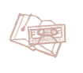

lifeOS


экспертов важнейших сфер жизни


Мы разбили весь год на 12 сфер жизни (здоровье, инвестиции, питание, родительство, спорт, карьера/бизнес и т.д.) и подобрали на каждый блок выдающегося профессионала.
В формате 2-х вебинаров в месяц + ежедневной доступности эксперта по всем вопросам + домашних заданий с проверками + личного куратора для постоянной помощи + включенных консультаций с профессионалами + оффлайн лекций будем силой маленьких шагов менять свои жизни за год до неузнаваемости.


Переплетая все сферы между собой, без напряга и играючи – разбираемся по-очереди с каждым из важных направлений, чтобы раз и навсегда сменить траекторию жизни и стать другим человеком.

Обо мне
Автор проекта – Захар Плодунов
10 лет руковожу IT-компанией "John Galt" (27 сотрудников). С партнерами создали и развиваем самый большой спортивный клуб Беларуси "Tristyle" и экосистему для эндуро-мотоциклов "Enduro Academy" (тренировки, СТО,магазин).
Финишировал бизнес-MBA, Ironman, марафон из 3-х часов, 10-километровый заплыв в открытой воде Сибири, многодневную эндуро-гонку в Карелии, поднялся на Килиманджаро и Эльбрус (дважды). Первый белорус, финишировавший марафон на Эвересте на высоте 5500м.
Когда-то почти стал ученым-астрофизиком (серебро и бронза на международных олимпиадах в Пекине), но окунулся в бизнес и затянуло.


Несколько лет развиваю сообщество Rational Club (клуб рациональных людей), в котором почти 1000 <платных> участников, и со временем понял одну вещь: людям не хватает фундаментальной концепции жизни, собранной в одном месте.

Как жить?
Буквально по шагам.
Мир полон информации. Получить ответ на любой вопрос – секундное дело. И в этом есть проблема.
Люди смотрят на мой лайфстайл и говорят: научи меня быть продуктивным, или научи меня как работать, заниматься спортом, делать бизнес, инвестировать…
Но дело в том, что эта задача решается единственным способом: собирать причудливые сетапы из вашего уникального набора интересов, целей, ценностей, возможностей. У каждого из нас сотни параметров, по которым можем варьировать жизнь. И тысячи целей, под которые параметры подгоняются.
Называю данный процесс
дизайном образа жизни.

Поэтому невозможно дать человеку PDF-ку на 50 страниц, или видео на 2 часа, и сказать: “иди делай!”. Большие инструкции в принципе не работают.
Не потому что мы тупые с клиповым мышлением (хотя это тоже факт)), а потому что такой подход никогда в истории рабочим и не был. Ибо мы все разные. Одни и те же советы (например, по инвестициям) кому-то могут обеспечить сытую старость, а для другого стать фатальными.

Единственный рабочий формат обучения – давать понимание сущности процесса. Маленькими спринтами с домашними заданиями и обратной связью.
Так родилась идея LifeOS – годовой программы по созданию индивидуального дизайна образа жизни каждого участника.
Суть в том, что в мире есть десятки вещей с асимметричным риском. Самый простой пример: чекап организма. Рискуешь небольшой суммой (в случае, если всё ок), а профит может составить лет 40 жизни (если вовремя обнаружить тот же рак).


Но дальше вопрос: а какой чекап делать, а как анализировать, куда идти, что значит если вот этот показатель плохой… Тот же случай, где надо вести по шагам с небольшими домашними заданиями. Начинающимися с “позвони вот сюда и запишись вот на это”…
И так в каждой сфере жизни. Сейчас подобных асимметричных действий скопилось в моем списке 63 штуки.
Рад анонсировать годовой проект, где силой маленьких шагов будем внедрять эти асимметричные действия в свою жизнь, получая выдающиеся результаты. Под руководвом экспертов в каждой из сфер.
У нас у всех есть куча целей, но редко кто прилагает хоть минимальные усилия для их достижения. На проекте планируем <заставить> :)
Как это будет
выглядеть на практике:
-
1.

Каждый месяц выбирается одна ключевая тема, которую фокусно прокачиваем 30 дней. Силой маленьких шагов.
-
2.

В отдельный Телеграм-чат добавляется супер-эксперт по этой теме.
-
3.
С ним проводим 2 вебинара в месяц. Отвечаем на вопросы, объясняем домашние задания.
-
4.

Эксперт доступен целый месяц в чате или лично для консультаций по теме.
-
5.

Отдельно на проекте будет личный помощник, который будет содействовать по техническим вопросам, домашним заданиям, напоминать, поощрять, мотивировать и выдавать награды за выполнение “уровней” в нашей игре под названием “жизнь”)
-
6.
Периодически будут проходить очные мероприятия (просмотр фильма, тренировка, встреча со специалистом по риторике) в городах с наибольшим количеством участников проекта (Минск, Москва и под вопросом несколько других миллионников). Но где бы Вы ни жили – у всех мероприятий будет запись с возможностью асинхронного обучения. Т.е. с возможностью пересмотреть пропущенный месяц и “досдать” домашнее задание. Так что вписываться можно с любой точки мира.
-
7.

Через год делаем общий выезд на 2 дня, чтобы мощно затусить и подвести итоги.
Идея в том, что за 12 месяцев проработаются все 12 сфер жизни, и это будет тот самый прорывной год, о котором так мечтают. У тех, кто реально готов постараться.
И не придется иметь 12 чатов/клубов по каждой теме. Можно всю жизнь уместить в один и комплексно.
План 12 месяцев:
 Июнь 2025, Здоровье
Июнь 2025, Здоровье

Модераторы месяца: врач-онколог; врач спортивной медицины.
Весь месяц по домашним заданиям качаем эту тему (чекап организма, врач смотрит анализы каждого и дает рекомендации, учимся понимать что нужно в каком возрасте и какие надо проходить обследования). Отдельно приглашаем врача-онколога для рассказа про чекапы, риски и их снижение.
Включено в стоимость: личная консультация врача по результатам анализов!


 Июль 2025, Питание
Июль 2025, Питание

Модераторы месяца: нутрициолог, тренер.
Очень важный компонент здоровья. Разбираемся что и когда есть, понимаем основы, налаживаем график, разбираем мифы. По результатам анализов прошлого месяца нутрициолог помогает составить индивидуальный план питания (в т.ч. под тренировочную программу) или консультирует по текущему.
Включено в стоимость:
 индивидуальный план питания на основе анализов или
корректировка существующего. Консультации нутрициолога.
индивидуальный план питания на основе анализов или
корректировка существующего. Консультации нутрициолога.
 Август 2025, Личная эффективность
Август 2025, Личная эффективность

Модераторы месяца: Захар Плодунов.
Когда со здоровьем закончили – пришло время личной эффективности. Мы не просто будем изучать “лайфхаки”. Они бесполезны без уровня над ними, т.е. смыслов. Поэтому в программе месяца что-то вроде “персональной стратегии” (только рабочей, а не той что подсовывают попсовые консультанты), ценностей, видения будущего, целеполагания, приоритетов, программ, задач, планирования, настройки рутины, борьбы с прокрастинацией. Расскажу всё что знаю и использую по данной теме.
 Сентябрь 2025, Второй мозг, продолжение памяти, нейросети
Сентябрь 2025, Второй мозг, продолжение памяти, нейросети

Модераторы месяца: Захар Плодунов; эксперт по цифровизации и нейросетям.
Второй мозг, продолжение памяти, нейросети. Настройка цифровой среды, в которой мозг будет работать эффективнее, а успеваться больше. Внедряем нейросети, добавляем цифровизацию в свою жизнь. Блок тесно пересекается с предыдущим и направлен на повышение личной эффективности.

Октябрь 2025, Карьера/бизнес

Модераторы: карьерный консультант/HR; бизнес-консультант.
Месяц на прокачку карьеры тех кто в найме или бизнеса собственников. Это будут два параллельных трека под контролем профессионалов. С домашними заданиями.
Ноябрь 2025, Личные финансы
Модератор месяца: эксперт по личным финансам.
Управление, подходы, планирование, бюджетирование, резервный фонд, долги/кредиты. Пошагово внедряем привычки и рутину, необходимые для контроля над личным бюджетом. Ещё и таким образом, чтобы оставались деньги для следующего пункта нашей программы: инвестиций.
Инвестиции, Декабрь 2025

Модератор месяца: опытный инвестор; Захар Плодунов.
В прошлом месяце разобрались с личными финансами, так что имеем излишки. За месяц купим свою первую акцию, изучим управление портфелем, подходы к анализу акций, разберемся с дивидендами, токенами, доступными инструментами для паспортов СНГ. И даже покажу личный портфель и какие акции держу в нём и почему. Рассмотрим золото, облигации, крипту, недвижимость и другие альтернативы.

 Январь 2026, Спорт
Январь 2026, Спорт

Модератор месяца: тренер; Захар Плодунов.
Как заниматься, нюансы, лайфхаки, научный подход, зарядка, качалка, связь спорта и счастья, внедрение в повседневность. Плавно добавляем спорт, учимся гармоничным, не мешающим жизни тренировкам. Практикуемся!)
 Февраль 2026, Психология + отношения
Февраль 2026, Психология + отношения

Модератор месяца: опытный психолог.
Тут без комментариев. Абьюзы, ред-флаги, всё что так любим. Основная тема: построение качественных отношений с партнерами и сохранение их навсегда.
 Март 2026, Личностный рост
Модератор месяца: культуровед.
Чтение, искусство, фильмы. Просмотр, обсуждение, выход на новый культурный уровень. Формируем вкус, стиль, посещаем музеи и выставки с пониманием дела, а не для галочки.
 Апрель 2026, Семья, родительство, свой клан
Апрель 2026, Семья, родительство, свой клан

Модератор месяца: опытный семейный психолог.
Воспитание детей, кризисы, перемены, трудности, советы, главные ошибки, подходы, эмоциональный интеллект. Воспитание без криков, семейные традиции, как не потерять контакт в цифровую эпоху.

 Май 2026, Личные софт-скилы
Май 2026, Личные софт-скилы
Модератор месяца: тренер по риторике, стилист.
Личные софт-скилы. Ораторское искусство, переговоры, уверенность в себе, подбор имиджа, самопрезентация. Всё что связано с внешним проявлением в мире: от соц. сетей до одежды и стиля. Встречают по одёжке – так что этот момент тоже проработаем.
В современном мире человек невероятно одинок. Мы знаем как сложно самостоятельно двигаться к целям, поэтому предлагаем своё плечо и руку.


Жизнь по течению, безответственное отношение к здоровью, хаотичное питание без понимания принципов, бесцельная жизнь, отсутствие планирования и цифровизации, ступор в карьере/бизнесе, хаос в финансах, отсутствие накоплений/инвестиций, проблемы со спортом, отношениями, детьми и личными софт-скилами.


Волшебных таблеток не существует, мы их и не предлагаем. Благодаря силе маленьких шагов, микро-привычкам и регулярным действиям, через год близкие Вас не узнают. Фундаментальные изменения в 12 сферах жизни, которые тянут за собой сотни более мелких следствий. Это не просто “стать лучшей версией себя”. Это стать целиком другим.
Придется поработать. Но результат, достигнутый раз и на всю жизнь, того стоит.
Сколько это стоит?
Чего Вам будет стоить улучшить
хотя бы одну
 из сфер на всю жизнь?
из сфер на всю жизнь?
Например, инвестиции могут принести сотни тысяч долларов. Устройчивые отношения
бесценны. Работа со
здоровьем “экономит”
годы.
На этом фоне цене программы приятно удивит.
Действуем. 12 месяцев силой
маленьких шагов

Годовая подписка на LifeOS – систему прокачки всех сфер жизни в течение года с экспертами.
Включено: 12 месяцев, 16 экспертов, 2 или более прямых эфиров в месяц, личный куратор по всем вопросам, домашние задания с проверкой, доступность экспертов в течение месяца для вопросов по теме, консультация врача по анализам, персональная коррекция питания, обратная связь стилиста, возможность задавать вопросы Захару и экспертам по темам месяца, очные мероприятия в рамках года (4 шт), организация ежегодного выезда на подведение итогов, подарок для выполнивших ДЗ всех месяцев.
Не включено: проживание на ежегодном выезде, анализы, посещение спортивных сооружений во время тренировок. Всё из перечисленного по желанию.

Формируем картину мира

Годовая подписка на R-club тарифа “Рациональный одноклубник” + доступ ко всему архиву сотен лонгридов.
2 лонгрида в неделю на актуальные темы для формирования картины мира + 1 очная лекция (включены в стоимость).
Помимо этого: смотрим далёкие галактики, туманности и планеты в огромный телескоп (0.5 метра диаметр зеркала), выезжаем на загородные мероприятия, прокачиваем бизнесы и карьеру в форум-группах.
18$ * 12 месяцев = 216$
 99$ при покупке годового
пакета целиком
99$ при покупке годового
пакета целиком

990$
66$ в месяц = 790$/год
Для первых 40 оплативших, далее 990$
-15% если присоединяетесь с другом/родственником
(670$)
-10% при оплате до 20 мая (711$)
-5% при оплате до 25 мая (750$)
Далее возможность попасть будет открываться только на 3 дня в конце каждого месяца без возможности получить бонусы предыдущих (консультации по анализам и подобное), но с возможностью смотреть записи эфиров. По стандартной цене 990$ или выше (в зависимости от количества участников, т.к. места ограничены возможностями экспертов).
* Скорее всего, проект окажется слишком времязатратным, так что повторов на данный момент не планируется.
Гарантии
Весь проект, подбор экспертов и ход процесса обеспечены и гарантируются репутацией автора Rational club – Захара Плодунова.
Подбор экспертов, проработка программ, домашних заданий, проведение прямых эфиров и встреч – также.
Мы уверены в качестве и уникальности продукта, поэтому гарантируем 100% возврат средств в течение 30 дней по любой причине.
Цель – чтобы через LifeOS прошло, изменив жизнь, минимум 1000 человек. Это возможно только благодаря сарафанному эффекту и превышению ожиданий. Полный возврат средств – меньшее что можно гарантировать в честном и открытом подходе.
Вопрос-ответ
Можно ли купить один месяц отдельно?
Нет. Идея – в комплексном подходе и переплетении всех сфер жизни. Месяцы вытекают из
предыдущих,
взаимосвязаны по теории и механике работы. Поэтому придя только на один (например, на
питание), но
пропустив предыдущий (медицина, где сдавали нужные анализы) – не получите должного
эффекта. А мы
хотим, чтобы каждый получил результат.
К тому же, философия LifeOS – в силе маленьких шагов. А для этого придется работать комплексно и долго.

Можно оплатить иностранными картами или криптой?
Да, можно подобрать любые удобные варианты оплаты из любой точки мира. Для этого
напишите в личные
сообщения Телеграм.
Если я пропущу один месяц?
Это Ваша ответственность, с проекта не выгоняем. Если одна из сфер развита хорошо
(например, Вы спец
по инвестициям) – можно пропускать месяц и возвращаться со следующего.
Какие результаты я получу через год?
Прямопропорциональные старанию и приложенным усилиям. У автора проекта в жизни случались
годы, когда
доход вырастал х5. Однако, они требовали сверхусилий.
Хорошая новость в том, что проект затрагивает и другие сферы, где проще получить асимметричный эффект. Например, даже разобравшись с регулярными чекапами – вы одним из результатов можете получить существенное увеличение продолжительности жизни за счёт раннего обнаружения проблем. Если смотреть записи и выполнять ДЗ – выдающиеся результаты будут гарантированно.
Будут ли меня заставлять?
Заставлять права не имеем. Будем всячески мотивировать, поддерживать, поощрять, помогать
и стыдить.
Чем LifeOS отличается от всего остального?
Это первая в истории комплексная программа, охватывающая всю жизнь целиком (если знаете
другие –
пришлите, пожалуйста, и мы уберем этот пункт).
“Операционная система жизни”, помимо прочего, включает в себя смыслы. Например, мы не просто “учимся пользоваться задачником” в блоке продуктивности. Это было бы смешно. Мы меняем картину мира всего процесса. Отвечая на вопросы про принципы, ценности и более верхний, главный уровень личной эффективности. А затем, конечно, учимся пользоваться задачником эффективно.
Я слишком занят. Будет ли у меня время выполнять задания?
Мы сделали этот проект специально для занятых людей. Автор управляет 3-мя
бизнесами
одновременно,
так что понимает Вас)
Вся программа состоит из асимметричных действий. Внедрение которых не занимает много времени, зато даёт непропорционально большой эффект для жизни. Те самые 20% усилий для 80% результата. Кто захочет – сможет напрячься и ради оставшейся части (у Вас будет информация), но это не обязательно.
Таким образом, 2 вебинара в месяц (на 1-1.5 часа) + несколько несложных домашних заданий – это не то, что отнимет много времени, но даст непропорционально большой эффект.
Я неорганизованный и недисциплинированный по жизни. Смогу ли выполнить план?
Большинство людей неорганизованы и недисциплинированы. Даже если утверждают обратное.
Зная это, мы добавили в проект полноценного личного помощника. Он будет напоминать, поддерживать, подсказывать, разъяснять домашние задания, принимать их и заниматься трекингом Вашего прогресса. Так что не переживайте, всё получится!
Сколько времени потребуется, чтобы увидеть результаты?
Поскольку модули идут месяц – результаты видны в конце каждого. Это не те длинные курсы
(например,
по программированию), где надо 2 года учиться, чтобы получить прогресс. Первые
результаты на первом
модуле – в течение первой недели. При этом отложенный эффект многих из них будет
“догонять” всю
жизнь.
Что если программа не будет работать для меня?
Задания и обучения распланированы таким образом, что не имеют шанса не работать. Как
может не
работать, например, понимание своего организма через
чекапы и инструкция когда и что делать по здоровью?
Но если что – у нас всегда есть гарантия полного возврата средств в течение 30 дней. Без лишних вопросов – просто дайте знать. Ваше спокойствие в приоритете.
Стаья огонь! Отправлю другу, он точно заценит! Как раз обсуждали тему инвестиций на днях и полностью согласны с Вами!
Стараемся) Конечно, статьи по инвестициям еще будут!)
Полезная инфа и смешные шутки! Подскажите, будут еще статьи про инвестиции?
Стараемся) Конечно, статьи по инвестициям еще будут!)